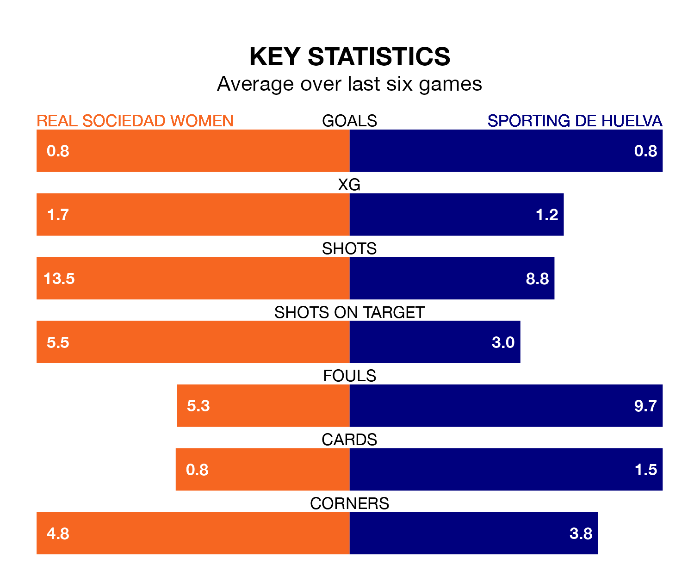

Real Sociedad Women are heavy favourites to keep all three points at home in Saturday's early kick-off against Sporting de Huelva.
Sociedad Women, who sit eighth in Liga F with 22 games played, are priced at 1.4 to seal victory at Instalaciones de Zubieta.
Sitting eight places and 23 points behind them in the table, Sporting are 6.2 to win with *Betting Company*, while the draw is at 4.4.
Sociedad Women are in bad form in Liga F, with no wins and three draws from their last six games.
But with no wins and a draw over that period, Sporting's form is even worse – they have taken one point from 18, compared to the home team's three.
In the last 10 years, Sociedad Women and Sporting have played each other on 18 occasions. Sociedad Women won nine of them, Sporting four, and they drew five times.
On average, Sociedad Women scored 1.4 goals and Sporting 0.8 in those matches.
Their last meeting was on December 9, when Sociedad Women won 2-1 away.
With 14 goals in 22 games so far this season, the visitors are the league's joint-second-lowest scorers with 0.6 goals per game. And they are conceding more than average, letting in 47 goals at a rate of 2.1 per game.
Sociedad Women are also below average scorers, with 1.3 goals per game, compared to a league average of 1.6. They have conceded 1.8 goals per game.
In Synne Jensen, Sociedad Women have one of the league's sharpest shooters so far this season. She has notched 11 goals in 20 appearances, to sit fifth in the scoring charts.
Her goal rate of one every 125 minutes is much quicker than that of Laia Balleste, Sporting's top scorer with a goal every 541 minutes, and a total of three goals in 20 games.
Sociedad Women's last match was on March 30, a 4-2 loss against Sevilla Women, with Emma Ramírez Gorgoso and Sanni Franssi getting the goals for Sociedad Women.
Sporting lost 2-1 against UD Granadilla Tenerife last time out, on March 31, with Miku Ito on the scoresheet.
Updated: 10:01 (UTC), 12/04/24